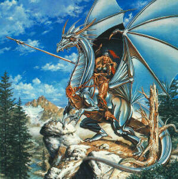

DarkeMUD FAQ

Gods: Diewarzau, Drizzt
Arches: Mikus, Warsyn, Shadowraith
Contents
- Theme
- Races
- Stats
- Guilds
- Experience
- Advancement
- Combat
- Law / Law Enforcement
- Economy
- Item Storage
- Communication
- Playing Tips

IMPORTANT: This is an advanced mud. It is extremely complex
in several ways that will become obvious as you play. We do
not
advise that you play this mud if you have never mudded
before, as
we have coded it with the seasoned mudder in mind. If this
is your
first mud, good luck, you can expect to die EXTREMELY often.
This
mud is largely combat-oriented, and experienced or not, you
can
expect to die more here than on most other muds. Because of
this, the
penalties of death are mild.
This mud has one domain. It is a fantasy mud with the
theme
of The Lost and the Damned. More specific... It is a dark,
evil
mud... Kinda a Gotham City from Batman, but fantasy. The
main
city is reminiscent of Menzobarranzen from The Underdark,
but above
ground. Beautiful, dark, and deadly. This theme carries
over the whole mud. Now it doesn't all have to be this
dark. There
has to be good somewhere. There are no dumb monsters,
weapons, etc. like a toy top or water pistol. Things must
stick to
a medieval theme.
We try to have a variety of races on Darke. Races get
bonuses to stats and they can have special abilities. Ex:
faster
healing, natural weaponry, etc... The races are unbalanced,
so
we balance the races by putting an experience modifier on
the exp
they gain. Negative or positive. Some races are very
versatile
and others are only suited for one type of guild. Select
your race
carefully to suit the type of guild you wish to be a part
of. Help
races for more information.
There are six stats on Darke. Str, Con, Wis, Int, Dex,
and
Chr. Stats are from 1-106. Stats can later be modified by
races,
items, and other things. I love those technical terms like
things.
The stats tell how many development points you will have.
(Unmodified except for racial mods) Stats do not increase
when you go up save by magic or items. Stats also give
bonuses
to skills and are considered the base. You must have
trained
once in the skill to be able to use it.
There are many guilds in Darke. Guilds are an important
part
of Darke. First, guild unity is very big here. There will
be a guild
master and guild represenatives. You must be invited into
the
guild by one of them. Some guilds lean towards soloing while
others lean towards partying. Try to match your guild with
your
race. Help guilds for more information.
Experience is gained a couple of ways: killing monsters,
critical hits, quests. You get a bonus for getting mass
exp. I.E.
killing a bad ass monster. Experience is only used for
raising
your level, not for skills/spells and of course you don't
raise your
stats. Level costs do vary between guilds.
As I said earlier development points are gained by
stats
except for charisma. The higher the stat, the more dev
points
you get. Each level you get more dev points. There are two
ways to spend dev points. 1) Slow development: It is a base
cost for a skill which you can raise once per level. 2)
Fast
development: Fast dev costs double slow dev. You can fast
dev all the dev points you have. There is no limit unlike
slow
dev. The dev costs for skills are a flat rate. Follow this
chart. So until you hit 60 in the skill (unmodified) each
time
you slow dev it raises by five. And so on.
- 0-60 by 5's
- 60-80 by 2's
- 80 and up by 1's
- Cost DOUBLES after 100.
Spells are raised similar to skills, but the dev point cost
is
cumulative. There are skills to cast spells etc...
NOTE: All skills are modified by a certain stat which
depends on the
skill itself.
To list your skills, type 'skills' or 'skills base' for base
skills.
To list your spells, type 'spells'
When you attack you can get a critical hit. This
critical hit is randomly
roled on a chart which has fun effects. It can do little or
kill instantly. It can cripple limbs and cause other ill
effects.
There are many different critical damages to support our
many
different damage types. There are also many modifications
to
the combat, such as multiple hits etc. Here is a quick list
of
some of the things the combat system supports.
This list is off the top of my head.
- Limb support
- Dodge, parry, and blocking...also bare-hand blocking(but
tough)
- Dual weapon attacking, multiply attacks
- Specific weapon support
- Penalty for using off hand (ambidextrous races are nice)
- Lots of other cool shit, but I forgot
The law is run by players. Wizards do not interfere.
There is a
council of the guildmasters. They enforce the laws through
the
guilds. If a guy gets out of hand as a player killer,.
players will
be expected to take care of it. NOTE!!! Player killing is
NOT
restricted on this mud! Anyone can kill whomever they
please without
the wizzes getting involved. The guild is expected to
provide support
for its members. If a lower-level player in your guild is
getting p/k'ed
or stolen from or whatever, you are expected to intervene on
his or
her behalf, or face the wrath of the guildmaster. Because
of this, the
wizzes DO NOT LIKE whining! If you whine to us about how
hard a time
you are having, you will get one of the following:
- Talk to your guildmaster.
- Play an easier mud.
HOWEVER, if the guildmaster of your guild is either
consistently
unavailable or refuses to do his or her job effectively, we
will
intervene, but ONLY THEN.
Eventually, the economy will be run almost entirely by players.
For now, all players may do is buy shops at certain
locations in the
town and sell whatever they wish for a predetermined
mark-up. These
items could range from things the player makes to valuable
items obtained
from killing monsters or completing quests.
Currently, the only way to save items past a reboot is to rent
a room at the inn. You must also buy a chest or other
container
which is specially designed to carry items past reboots and
place it
in your room. THE CHEST MUST BE CLOSED OR IT MAY NOT
SAVE!!!
In the future, player castles will be implemented, and items
may
be stored there.
Languages:
All characters can speak their racial tongue fluently from the
start of the game. To see the various racial tongues, type
'tongues'. In addition, everyone starts with a skill in
Common that
depends on intelligence. Use this language when speaking to
players
not belonging to your race. To see what languages are
available to
you, type 'languages'. Note that if you try to speak or
hear a language
in which you are not fluent, you may say or hear certain
things
incorrectly. Note that you learn languages automatically
(and rather
slowly) just by listening to it spoken. To change the
language
you are speaking, type 'speak [language]'.
In several instances, you will be called upon to talk to
NPC's or
monsters. You may do this with either the say or tell
commands.
If you use the say command, be sure to speak a language
known
to the NPC, and address it with its name followed by a
comma...
say whoever, blah blah blah.
If you have the mp, using the tell command is often more
convenient,
since it is not subject to language...see 'help
communication' for
details.
In addition, the players have access to their guild channel,
which
may be accessed by typing the channel name followed by a
message.
Players level 3 and under also have access to the newbie
channel.
You may view which channels you have access to with the
'lines'
command. Typing a channel name alone toggles it on and off.
As mentioned before, DarkeMUD is extremely difficult, especially
for the novice. For this reason, we suggest you help yourself
out as much as you can. Here are a few tips:
- Make lots of friends. You will need powerful allies to make it.
- Use a terminal that supports color! Color has been added to bring
out the important messages in combat etc. that often get lost.
- Pick a good
MUD client
or term program. The macros and buffers can
save you.